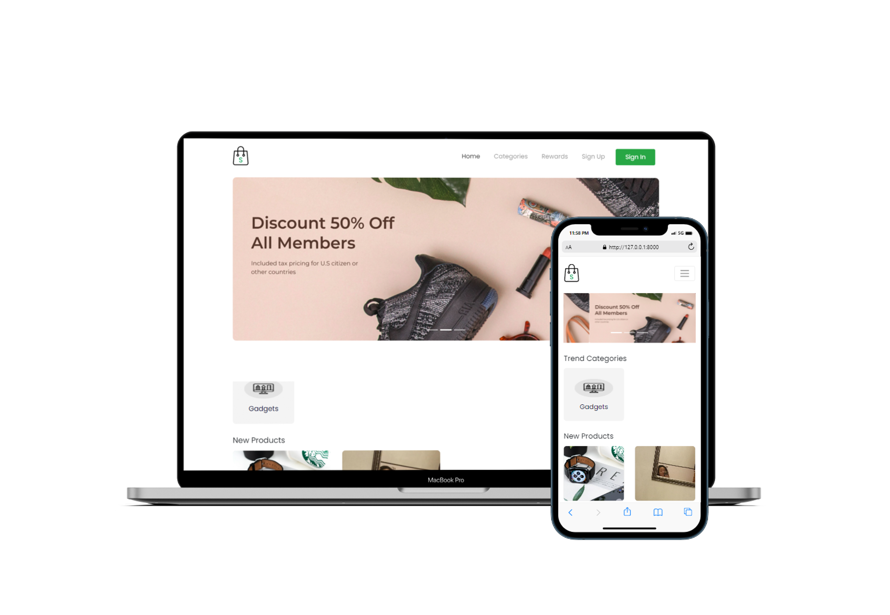
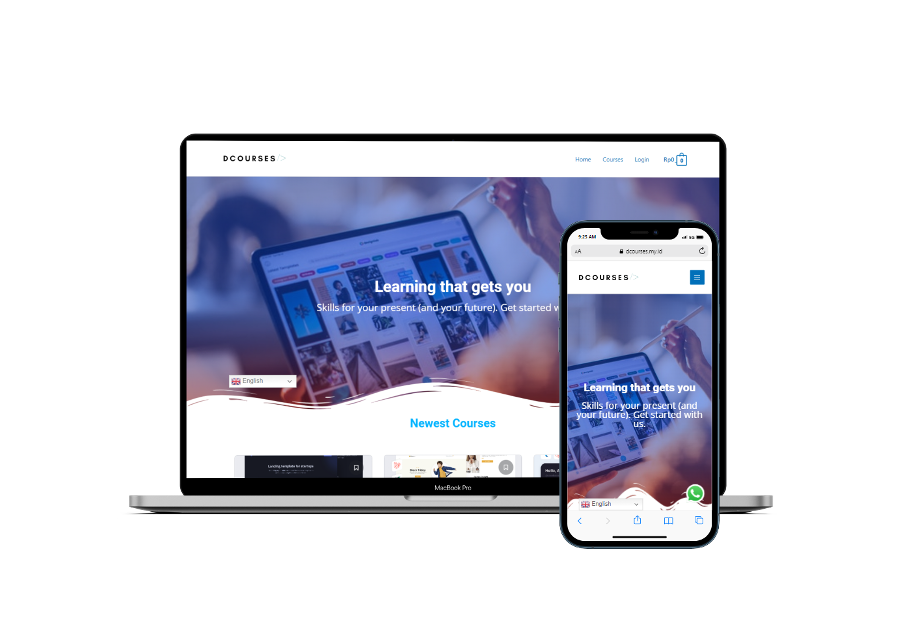
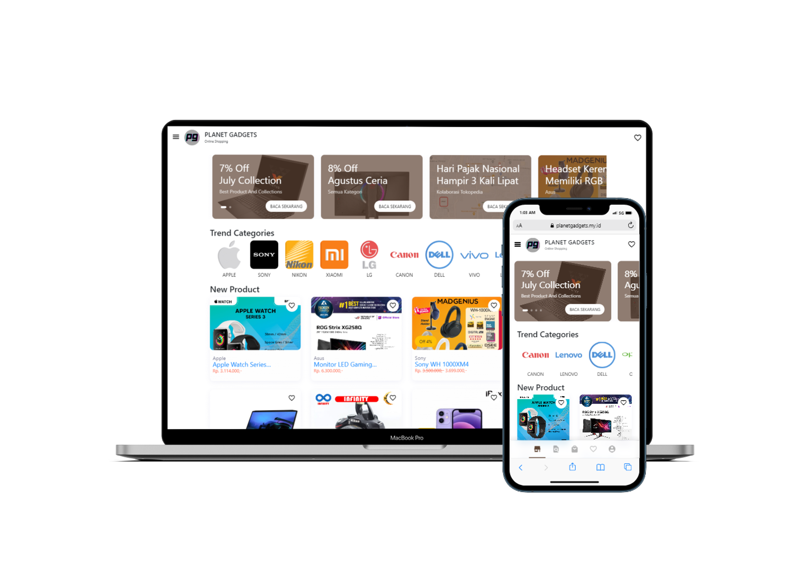
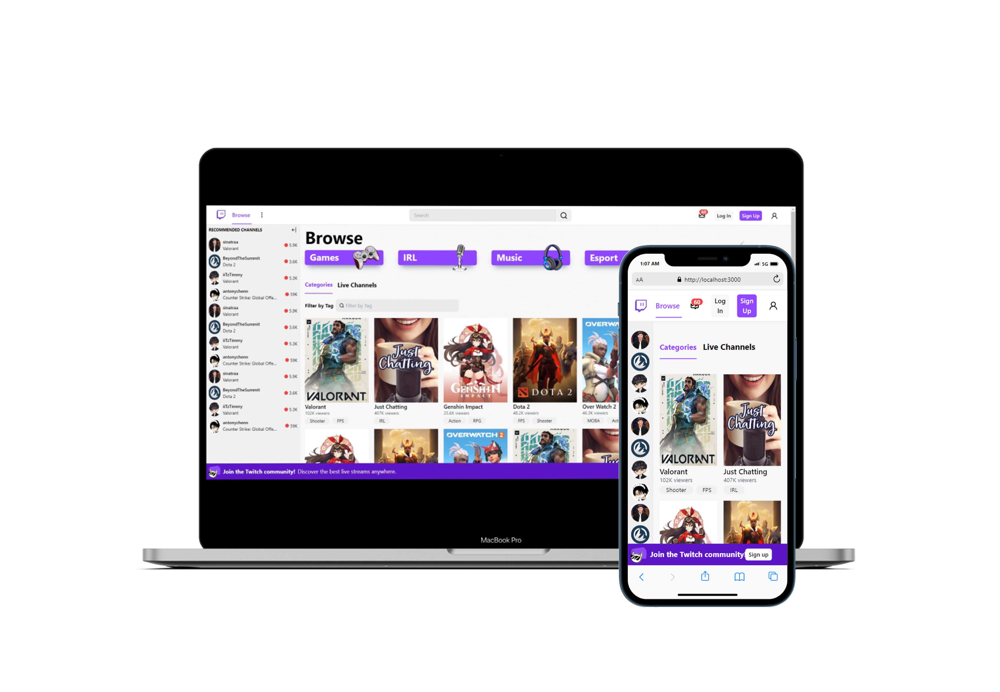
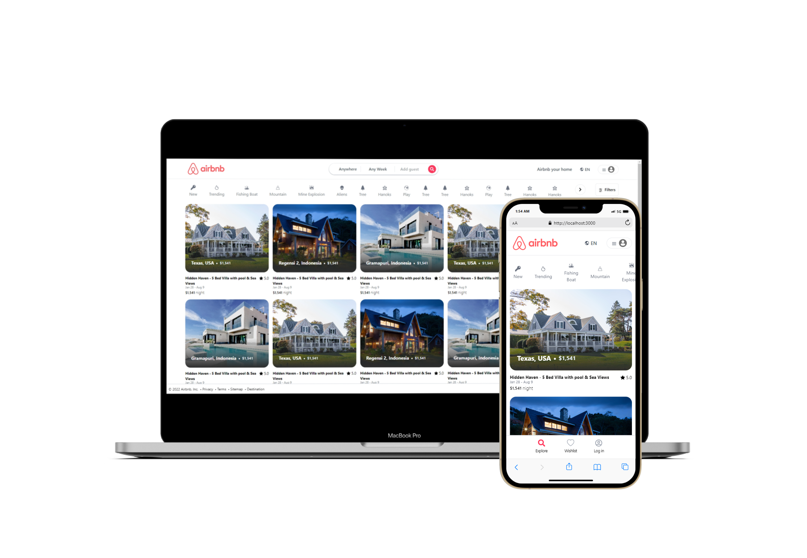
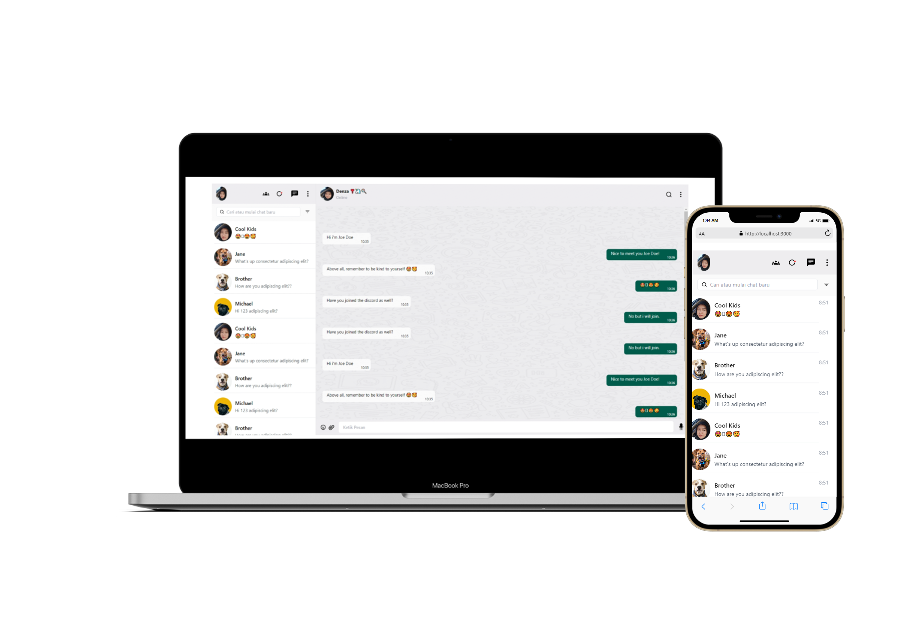

Portfolio
Click on any project to view details.







Over 3 years of engineering excellence in enterprise banking. I build scalable automation frameworks (Playwright, Katalon) and validate complex Core Banking systems. Creator of the award-winning IRIS Platform.
Years Experience
Major Projects
IT Innovation Award
A comprehensive stack for robust quality assurance.
End-to-End lifecycle management prioritizing stability and precision.
Building high-performance test suites to ensure rapid delivery without regression.
Deep validation of legacy architectures and highly integrated environments.
Versatile technical foundation supporting comprehensive QA processes.
Track record of delivering quality in high-stakes environments.
QLola Management System
Banking Enterprise System
Subsidi Tepat LPG
Web & Mobile Application
Click on any project to view details.





